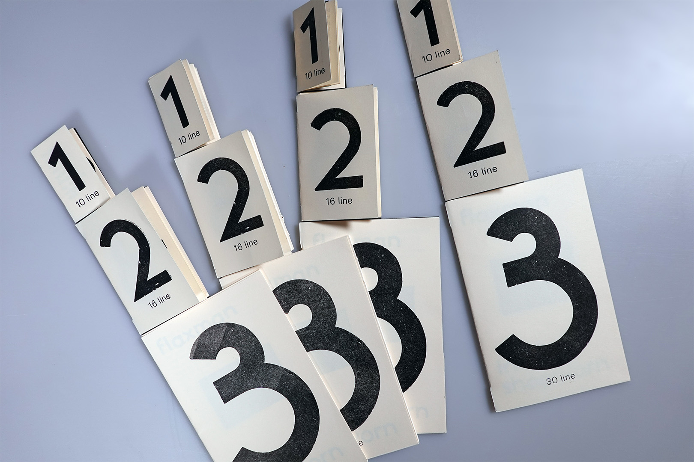
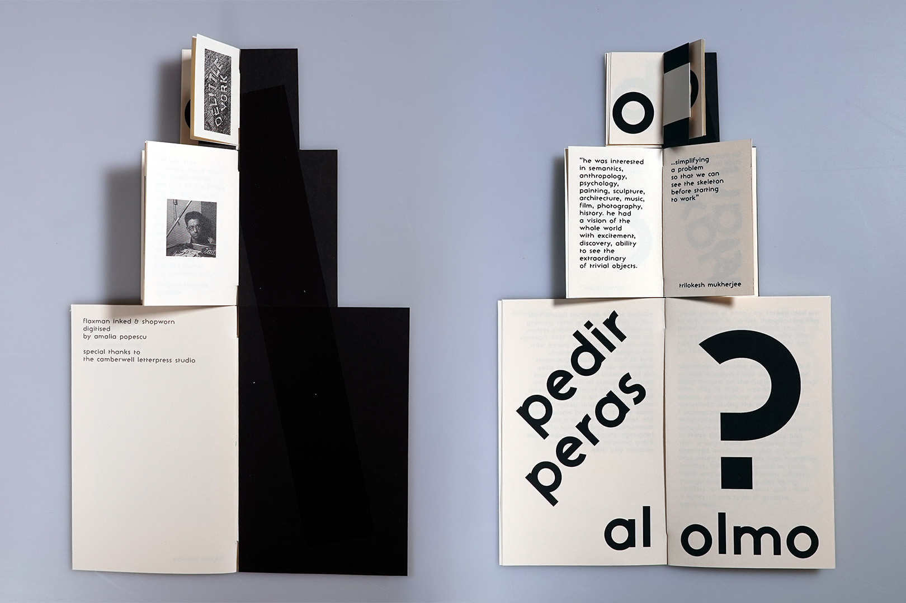
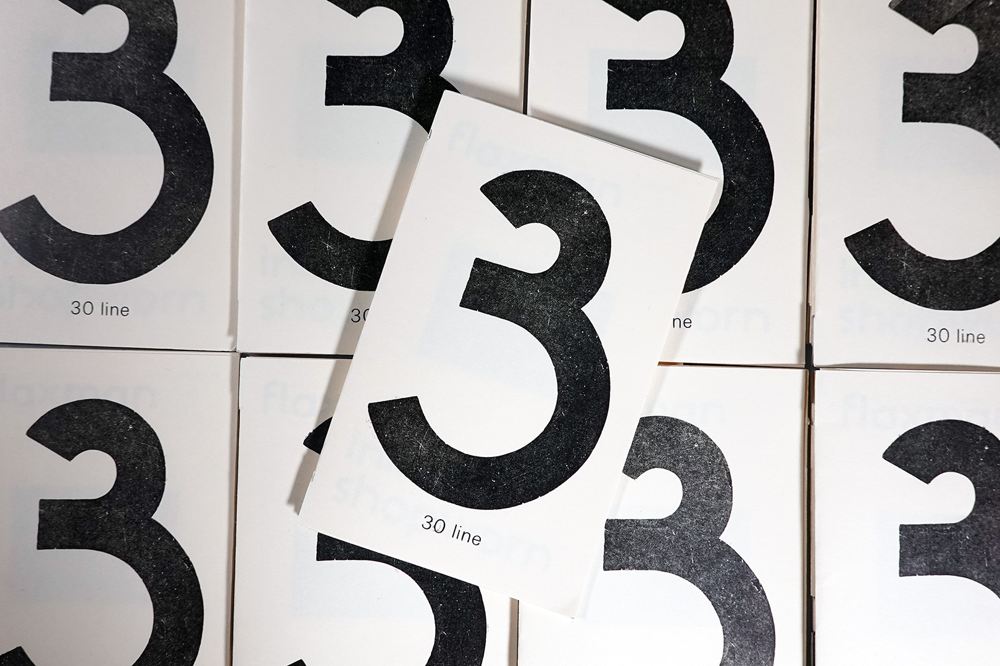
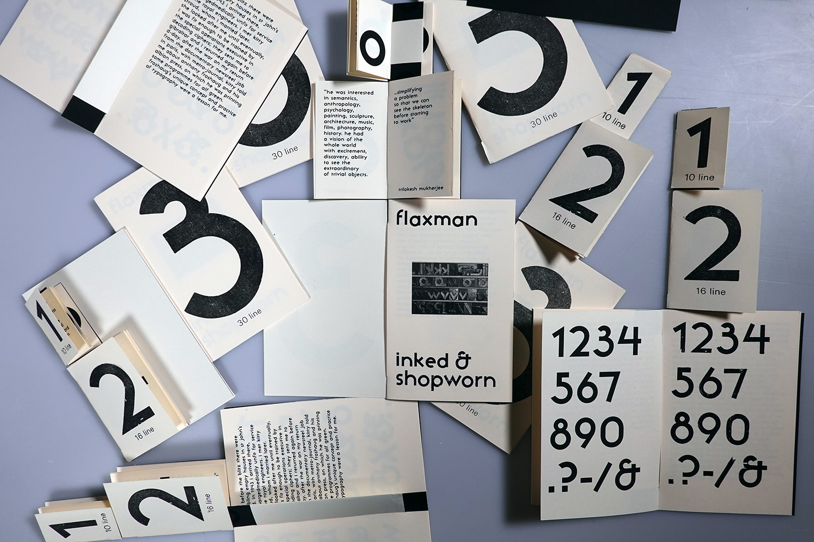

Amalia Popescu
About





Flaxman Typeface
(Type Revival Project)
Flaxman is a project that originated from research in the Camberwell Letterpress Studio during my studies at UAL. The studio holds the only copy of this woodblock typeface, and I wanted to develop a project that extends its reach while celebrating its history. As part of this, I digitised an inked and shopworn version of the typeface and produced both printed and digital type specimens. The typeface is still in development as I continue exploring the potential applications and stylistic directions of the typeface.
next project >